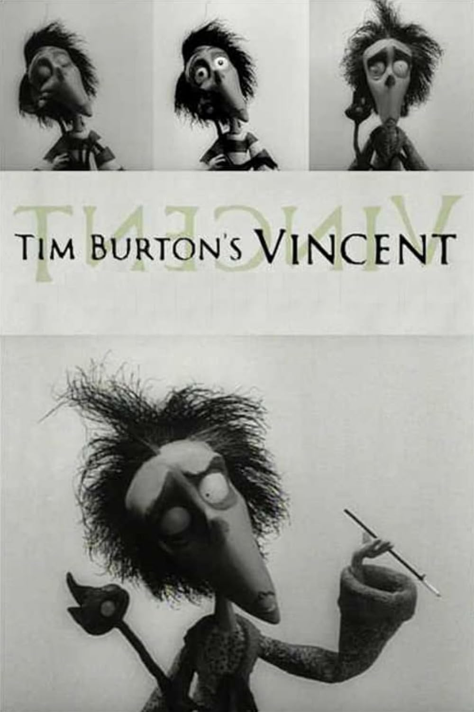
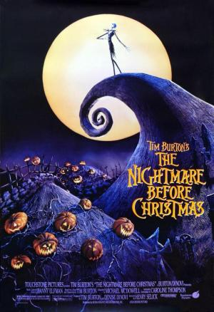
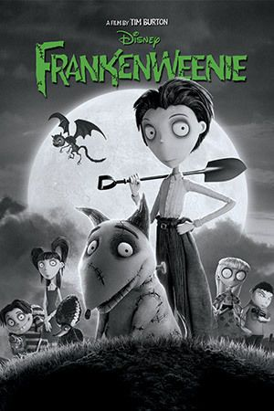

¿Que es el STOP MOTION?
El stop motion (o animación en volumen) es una técnica artesanal que simular el movimiento de objetos estáticos mediante una sucesión de fotos fijas.Su magia es simple: movés un objeto un milímetro, sacás una foto, lo volvés a mover y sacás otra. Al reproducir todas esas imágenes juntas a gran velocidad (a 12 o 24 fotogramas por segundo), el cerebro humano crea la ilusión de que el objeto se mueve por sí mismo.A diferencia del cine digital, acá todo lo que ves es real y tangible.
Tipos de Stop Motion más popularesClaymation:
nimación con personajes moldeables de plastilina o arcilla (como Wallace y Gromit). Muñecos (Puppets): Figuras de silicona con un esqueleto articulado interno para movimientos precisos (como Coraline). Pixilación: Los "muñecos" son personas reales que se mueven cuadro por cuadro, logrando un efecto surrealista. Cut-out: Figuras planas hechas de recortes de papel, cartón o fotos.Objetos: Animación de elementos cotidianos o juguetes, muy común con bloques de LEGO.
¿Cómo se hace? (El proceso en 3 pasos)
El Escenario: Se arman los personajes y el decorado. La cámara se fija en un trípode y la luz se controla por completo para que no haya cambios bruscos. La Captura: El animador mueve los objetos milímetro a milímetro, sacando una foto tras cada cambio. ¡Se necesita mucha paciencia! El Montaje: Las fotos se suben a un software o app de edición, se define la velocidad y se añaden la música y las voces.
Tim Burton y el Stop Motion
Hablar de stop motion en el cine moderno es, inevitablemente, hablar de Tim Burton. Aunque el famoso director es conocido por sus películas de acción real, su verdadera firma estética y su pasión más profunda residen en la animación fotograma a fotograma.
Para Burton, esta técnica no es solo un recurso visual; es una forma de arte que le permite materializar sus mundos góticos, melancólicos y bellamente perturbadores de una manera que la animación por computadora (CGI) jamás podría replicar. Lo tangible, lo imperfecto y lo artesanal del stop motion son el vehículo perfecto para sus historias.
El Sello Burton: ¿Por qué le fascina esta técnica?Para Tim Burton, el stop motion tiene una cualidad mágica: la textura. El hecho de que un animador tenga que tocar físicamente el muñeco para moverlo milímetro a milímetro deja una "huella humana" invisible en la pantalla.
Sus personajes suelen compartir rasgos inconfundibles: ojos enormes y expresivos, extremidades extremadamente largas y delgadas, y texturas que recuerdan a la madera, la tela o la arcilla. En sus propias palabras, el stop motion vuelve reales a los monstruos, permitiendo que el público empatice con ellos desde la imperfección.

Peliculas
Vicent (1982).
El Extraño Mundo de Jack (1983)
El Cadaver de la Novia (2005). Frankenweenie (2012)
Frankenweenie (2012)
